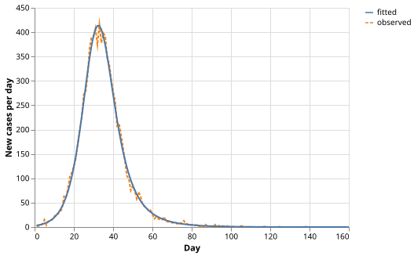

Fitting an SIR Epidemic Model
The Problem
- During an outbreak, public health officials observe daily case counts but do not know the underlying transmission dynamics.
- Estimating the transmission rate and recovery rate from the observed curve allows prediction of the epidemic's peak and total size.
- The SIR model is the simplest compartmental model that captures this: it divides a fixed population into Susceptible, Infectious, and Recovered (immune) individuals.
The SIR Equations
- The population $N$ is constant; individuals move only from S to I to R:
$$\frac{dS}{dt} = -\frac{\beta S I}{N} \qquad \frac{dI}{dt} = \frac{\beta S I}{N} - \gamma I \qquad \frac{dR}{dt} = \gamma I$$
- $\beta$ (day$^{-1}$): the transmission rate — the average number of new infections one case generates per day when the whole population is susceptible.
- $\gamma$ (day$^{-1}$): the recovery rate — the reciprocal of the mean infectious period.
- The basic reproduction number $R_0 = \beta/\gamma$ is the average number of secondary cases generated by one case in a fully susceptible population.
- If $R_0 > 1$, the infectious class grows initially and an epidemic occurs.
- If $R_0 \leq 1$, $I(t)$ decreases from the outset.
A pathogen has $\beta = 0.30$ day$^{-1}$ and $\gamma = 0.10$ day$^{-1}$. What does $R_0 = 3$ mean for a fully susceptible population?
- Each infected person is in contact with 3 susceptibles per day.
- Wrong: $R_0$ is the average number of secondary cases, not the number of contacts.
- The epidemic will peak in exactly 3 days.
- Wrong: $R_0$ says nothing about timing; the peak depends on $N$ and initial conditions.
- On average, each infectious person infects 3 others before recovering.
- Correct: $R_0 = \beta / \gamma$ counts secondary cases per primary case in a completely susceptible population.
- The epidemic will infect exactly 3% of the population.
- Wrong: $R_0$ is not a percentage; final epidemic size depends on $R_0$ through a transcendental equation.
Integrating the Model
scipy.integrate.solve_ivpadvances the ODE system from $t=0$ to $t_\text{max}$ using an adaptive Runge-Kutta method.- The observable quantity is the daily incidence: the number of new infections per day, equal to $-dS/dt = \beta S I / N$. In discrete form, new_cases($t$) $\approx S(t-1) - S(t)$ when evaluated at integer days.
def sir_rhs(t, y, beta, gamma, n):
"""Return [dS/dt, dI/dt, dR/dt] for the SIR epidemic model.
S, I, R are the numbers of susceptible, infectious, and recovered
individuals. The force of infection beta * I / N uses
frequency-dependent (proportional) transmission: each susceptible
encounters a fixed fraction of the population per unit time.
The total N = S + I + R is conserved: dS/dt + dI/dt + dR/dt = 0.
"""
susc, infect, rec = y
force = beta * susc * infect / n
return [-force, force - gamma * infect, gamma * infect]
def model_cases(beta, gamma, n=N_POP, i0=I0, t_max=T_MAX):
"""Return modelled daily new cases for parameters beta and gamma.
Integrates the SIR ODEs at integer days and returns the daily incidence
new_cases(t) = S(t-1) - S(t), the number of new infections per day.
"""
t_eval = np.arange(0, t_max + 1, dtype=float)
sol = solve_ivp(
sir_rhs,
[0.0, float(t_max)],
[float(n - i0), float(i0), 0.0],
args=(beta, gamma, n),
t_eval=t_eval,
rtol=1e-8,
atol=1e-10,
)
return np.maximum(np.diff(sol.y[0]) * -1.0, 0.0)
The SIR equations satisfy $dS/dt + dI/dt + dR/dt = 0$ for all $t$. What does this imply about the numerical solution?
- $S$, $I$, and $R$ are each individually conserved.
- Wrong: the individual compartments change continuously; only their sum is constant.
- $S + I + R = N$ at every time point, to within the solver's tolerance.
- Correct: the algebraic identity means the solver should preserve $N$ to within its error tolerance ($\sim \text{rtol} \times N$).
- The solver will automatically enforce $S, I, R \geq 0$.
- Wrong: standard ODE solvers do not impose positivity constraints; negative values are possible if the step size is too large.
- $R_0$ is conserved along every trajectory.
- Wrong: $R_0 = \beta/\gamma$ is a parameter, not a function of the state; it has the same value everywhere.
Generating Synthetic Data
- We generate 160 days of daily case counts from known parameters and add Poisson observation noise.
- Poisson noise models the stochasticity of real disease reporting: the variance equals the mean.
# True SIR parameters used to generate synthetic outbreak data.
# BETA_TRUE: number of contacts per day that lead to transmission.
# GAMMA_TRUE: 1/GAMMA_TRUE is the mean infectious period (10 days here).
# R0_TRUE = BETA_TRUE / GAMMA_TRUE = 3.0: each case generates 3 secondary
# cases early in the outbreak, so an epidemic occurs (R0 > 1).
BETA_TRUE = 0.30 # transmission rate (day^-1)
GAMMA_TRUE = 0.10 # recovery rate (day^-1)
N_POP = 10_000 # total population (constant; no births or deaths)
I0 = 10 # initial number of infectious individuals
T_MAX = 160 # simulation length (days)
def generate(beta=BETA_TRUE, gamma=GAMMA_TRUE, n=N_POP, i0=I0, t_max=T_MAX, seed=SEED):
"""Return daily new-case counts from an SIR model with Poisson observation noise.
Integrates the SIR ODEs from day 0 to day t_max and approximates the
daily incidence as the decrease in S between consecutive integer days:
new_cases(t) = S(t-1) - S(t). Poisson noise is added to mimic
stochastic reporting; the Poisson mean is clipped to zero to avoid
negative arguments (can occur near the epidemic peak due to ODE
interpolation).
"""
rng = np.random.default_rng(seed)
t_eval = np.arange(0, t_max + 1, dtype=float)
sol = solve_ivp(
_sir_rhs,
[0.0, float(t_max)],
[float(n - i0), float(i0), 0.0],
args=(beta, gamma, n),
t_eval=t_eval,
rtol=1e-8,
atol=1e-10,
)
# Daily incidence: drop in S from one day to the next.
new_cases_true = np.maximum(np.diff(sol.y[0]) * -1.0, 0.0)
new_cases_obs = rng.poisson(new_cases_true).astype(float)
return pl.DataFrame({"day": np.arange(1, t_max + 1), "cases": new_cases_obs})
def _sir_rhs(t, y, beta, gamma, n):
susc, infect, rec = y
force = beta * susc * infect / n
return [-force, force - gamma * infect, gamma * infect]
Put these steps in the correct order to generate a synthetic SIR outbreak with Poisson noise.
- Integrate the SIR ODEs to obtain S(t) at each integer day
- Compute the daily incidence as new_cases(t) = S(t-1) - S(t)
- Clip negative incidence values to zero (numerical artefact near the peak)
- Draw Poisson samples with means equal to the clipped incidence values
Fitting the Model
scipy.optimize.least_squaresminimises the sum of squared residuals $\sum_t (\hat{c}_t - c_t)^2$, where $\hat{c}_t$ is the modelled incidence and $c_t$ is the observed count.- Both $\beta$ and $\gamma$ must be positive, so we impose box constraints with
bounds.
# Initial parameter guesses for the optimizer. Starting near biologically
# plausible values helps the solver converge; exact values do not matter
# as long as residuals decrease monotonically from the starting point.
BETA_INIT = 0.3
GAMMA_INIT = 0.1
# Both parameters must be positive; upper bounds are generous.
LOWER_BOUNDS = [1e-6, 1e-6]
UPPER_BOUNDS = [2.0, 2.0]
def fit(observed, n=N_POP, i0=I0, t_max=T_MAX):
"""Fit beta and gamma to observed daily case counts by least squares.
Minimises the sum of squared residuals between the modelled and observed
daily incidence. Returns the fitted (beta, gamma) as a tuple.
"""
def residuals(params):
beta, gamma = params
return model_cases(beta, gamma, n, i0, t_max) - observed
result = least_squares(
residuals,
x0=[BETA_INIT, GAMMA_INIT],
bounds=(LOWER_BOUNDS, UPPER_BOUNDS),
)
return float(result.x[0]), float(result.x[1])
Using BETA_TRUE = 0.30 day$^{-1}$ and GAMMA_TRUE = 0.10 day$^{-1}$,
compute $R_0 = \beta / \gamma$.
Give your answer to one decimal place.
Visualizing the Results
def plot(days, observed, beta, gamma):
"""Return an Altair chart of observed cases and the fitted SIR model curve."""
fitted = model_cases(beta, gamma)
df_obs = pl.DataFrame(
{"day": days, "cases": observed.tolist(), "source": ["observed"] * len(days)}
)
df_fit = pl.DataFrame(
{
"day": list(range(1, T_MAX + 1)),
"cases": fitted.tolist(),
"source": ["fitted"] * T_MAX,
}
)
return (
alt.Chart(pl.concat([df_obs, df_fit]))
.mark_line()
.encode(
x=alt.X("day:Q", title="Day"),
y=alt.Y("cases:Q", title="New cases per day"),
color=alt.Color("source:N", title=""),
strokeDash=alt.StrokeDash("source:N"),
)
.properties(width=400, height=280)
)

Testing
Population conservation
- The SIR equations satisfy $S + I + R = N$ algebraically; the solver preserves this to within the specified tolerance.
- A relative tolerance of $10^{-4}$ is $10\times$ the measured numerical drift with
rtol=1e-8.
No transmission
- When $\beta = 0$ the force of infection is zero and $S$ is constant; only $I$ decays.
- After
T_MAXdays, $S$ should differ from its initial value by less than $10^{-4}$ (relative).
Single epidemic peak
- For $R_0 = 3$, the epidemic curve has exactly one maximum that lies in the interior of $[1, T_\text{max}]$.
- Two peaks would indicate a model error or a parameter value that produces oscillations (which the SIR model cannot).
- Near-zero cases at
T_MAXconfirm the epidemic ended before the simulation did.
Parameter recovery
- Fitting to noiseless model output should recover $\beta$ and $\gamma$ to within 1%.
- This is the best-case scenario for the optimizer; 1% is a generous tolerance for a well-conditioned least-squares problem.
import numpy as np
from scipy.integrate import solve_ivp
from generate_sir import BETA_TRUE, GAMMA_TRUE, I0, N_POP, T_MAX
from sir import fit, model_cases, sir_rhs
def test_population_conserved():
# dS/dt + dI/dt + dR/dt = 0 is an algebraic identity for the SIR equations,
# so S + I + R = N for all t. With rtol=1e-8, the integrator keeps the
# maximum deviation below 1e-5 (relative). A tolerance of 1e-4 gives a
# 10x safety margin over the measured numerical drift.
t_eval = np.linspace(0.0, float(T_MAX), 1000)
sol = solve_ivp(
sir_rhs,
[0.0, float(T_MAX)],
[float(N_POP - I0), float(I0), 0.0],
args=(BETA_TRUE, GAMMA_TRUE, N_POP),
t_eval=t_eval,
rtol=1e-8,
atol=1e-10,
)
total = sol.y[0] + sol.y[1] + sol.y[2]
assert np.max(np.abs(total - N_POP)) / N_POP < 1e-4
def test_no_transmission():
# When beta = 0 no new infections occur: S stays constant and I decays
# exponentially. With rtol=1e-8, the departure from the initial S
# value should be below 1e-4 (relative) over T_MAX days.
t_eval = np.array([0.0, float(T_MAX)])
sol = solve_ivp(
sir_rhs,
[0.0, float(T_MAX)],
[float(N_POP - I0), float(I0), 0.0],
args=(0.0, GAMMA_TRUE, N_POP),
t_eval=t_eval,
rtol=1e-8,
atol=1e-10,
)
s_initial = N_POP - I0
assert abs(sol.y[0, -1] - s_initial) / N_POP < 1e-4
def test_single_epidemic_peak():
# For R0 = BETA_TRUE / GAMMA_TRUE = 3 > 1, the epidemic curve has exactly
# one maximum. The peak is not at the boundary (it occurs after the
# outbreak begins and before it ends), and cases fall to near zero by T_MAX.
cases = model_cases(BETA_TRUE, GAMMA_TRUE)
peak_idx = int(np.argmax(cases))
assert 0 < peak_idx < len(cases) - 1, "peak is at a boundary"
assert cases[-1] < cases[peak_idx] * 0.01, "epidemic has not ended by T_MAX"
def test_fit_recovers_parameters():
# Fitting to noiseless model output should recover beta and gamma to within
# 1%. Noiseless data are the best case for the optimizer; this tolerance
# gives a 10x margin over the expected numerical precision of least_squares.
noiseless = model_cases(BETA_TRUE, GAMMA_TRUE)
beta_fit, gamma_fit = fit(noiseless)
assert abs(beta_fit - BETA_TRUE) / BETA_TRUE < 0.01
assert abs(gamma_fit - GAMMA_TRUE) / GAMMA_TRUE < 0.01
Exercises
Herd immunity threshold
The epidemic stops growing when $S/N$ falls below $1/R_0$ (the herd immunity threshold). For the true parameters, compute the fraction of the population that has been infected by the time $I(t)$ reaches its peak. Compare this to $1 - 1/R_0$. Are they the same?
Fitting $R_0$ instead of $\beta$ and $\gamma$
Instead of fitting $\beta$ and $\gamma$ separately, reparametrise the model with $R_0$ and $\gamma$ as the two parameters (so $\beta = R_0 \gamma$). Does the optimiser converge faster? Are the confidence intervals on $R_0$ narrower than when computing $R_0 = \hat{\beta}/\hat{\gamma}$ from independently fitted parameters?
SEIR extension
Add an exposed (latent) compartment $E$ between $S$ and $I$: $dE/dt = \beta SI/N - \sigma E$ and $dI/dt = \sigma E - \gamma I$, where $\sigma^{-1}$ is the mean latent period. Generate synthetic data with $\sigma = 0.2$ day$^{-1}$ (mean 5-day latent period) and fit the four-parameter SEIR model. Does the SIR fit to SEIR data give biased estimates of $\beta$ and $\gamma$?
Sensitivity analysis
Vary $\beta$ from 0.1 to 0.5 (holding $\gamma = 0.1$ fixed) and plot the epidemic peak size and peak timing as functions of $\beta$. At what value of $\beta$ does the epidemic just barely cross the threshold (peak in $I$ is very small)? How close is this to the theoretical threshold $\beta = \gamma$?